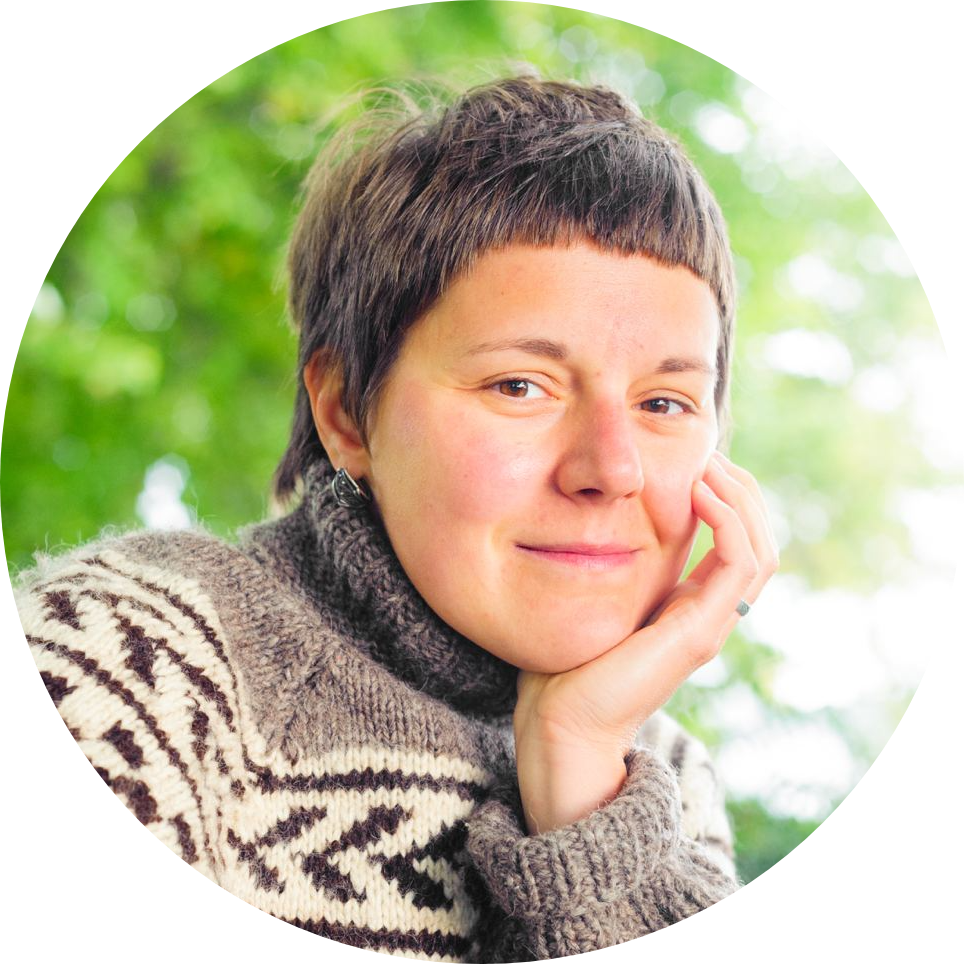

name
The legal variant of "Natasha" is "Natalia". The former is my name, and the latter is reserved for paperwork.
|
contact

Linguistics Department, PO D-191
University of Konstanz
78457 Konstanz
Germany

|
about
I am a postdoctoral fellow at the Linguistics Department at the University of Konstanz, where I am a part of a lively Lakeside Semantics community. Until recently, I was also an associate member of the SFB 833 "Construction of meaning" (University of Tübingen), a group that brings together linguists and psychologists.
My pronouns are she/her. I am a vegetarian and I've been commuting by bike since 2010, including in Los Angeles.
My work is mostly on formal semantics and formal pragmatics. I also have additional interests in formal syntax and analytic philosophy, especially philosophy of language and epistemology. My research program in broad strokes is on the nature of cross-linguistic variation, on the division of labor between semantics and pragmatics, and on the synthesis between linguistics and philosophy.
My major interests are epistemic commitments and first-person content, as well as everything in between. The specific topics I have worked on include evidentiality, modality, predicates of personal taste, attitude reports, clausal complementation, parentheticals, speech acts, and non-canonical questions. My research program is described in greater detail here, and most current projects revolve around one of the following issues: (i) the universals and variation in the evidential domain, (ii) the semantics and metasemantics of taste, and (iii) non-canonical interrogatives across Slavic. The full CV is here.
recent and upcoming
August 2021. Published in Linguistics and Philosophy. "How to theorize about subjective language: a lesson from de re" (w/ P.Anand) [paper]
July 2021. "An opinionated guide to the language of opinion". Class at the 32nd European Summer School in Language, Logic and Information (ESSLLI), organzied by Utrecht University. [online] (w/ P.Anand)
June 2021. TBA. Invited talk at the Triple A workshop, organized by the National University of Singapore. [online]
June 2021. "Find, must and conflicting evidence". Invited talk at Colloquium of the English Department, University of Stuttgart, Germany.
April 2021. "Find, must and conflicting evidence". Invited talk at Linguistics Department, University of Massachusetts, Amherst, USA.
September 2020. "Find, must and conflicting evidence". Talk at Sinn und Bedeutung 25, hosted virtually by University College London (UCL) and Queen Mary University of London (QMUL). (w/ P.Anand) [video & slides]
July 2020. "The notional category of evidentiality". Invited class at the Web Summer School for Logic, Language, and Information (WESSLLI), a virtual school organized by the Brandeis University; in lieu of NASSLLI, moved to 2021 due to the COVID-19 pandemic. [class page]
April 2020. "The subjective heart of evidentiality". Talk at the workshop "Semantic Universals in the Modal and Attitudinal Domain", GLOW 43, hosted virtually by ZAS and the Humboldt University of Berlin. [video & handout]
April 2020. Published in Semantics & Pragmatics. "Evidential meaning and (not-)at-issueness". [paper]
March 2020. "Subjective attitudes and direct experience". Invited talk at Colloquium of the Formal Linguistics Research Group (GLiF), University Pompeu Fabra, Barcelona.
January 2020. "Must, find, and conflicting evidence". Invited talk at the Colloquium of the General and Theoretical Linguistics, University of Tübingen.